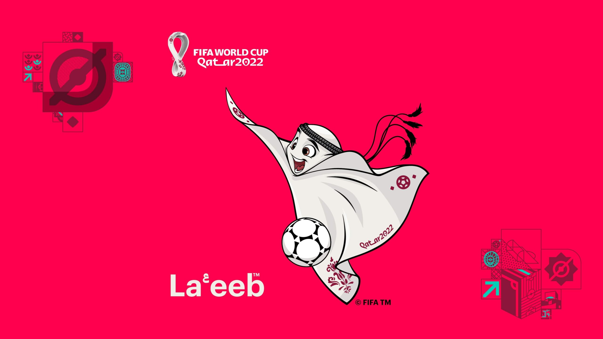
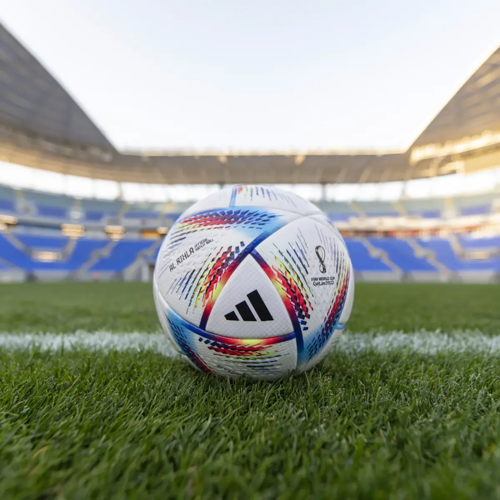
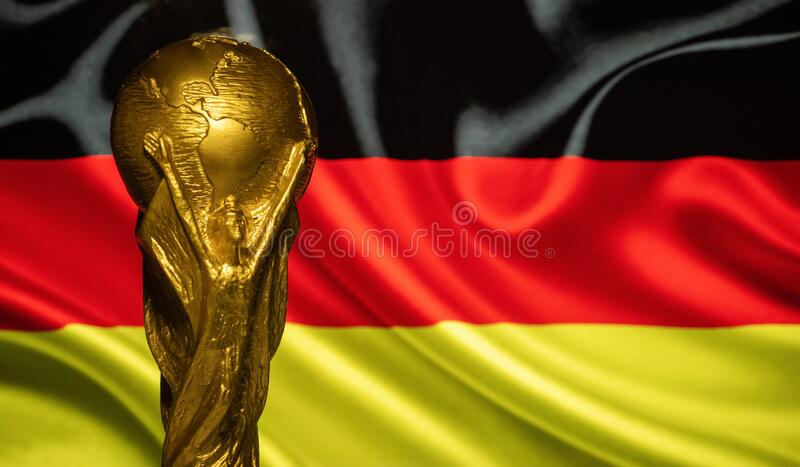
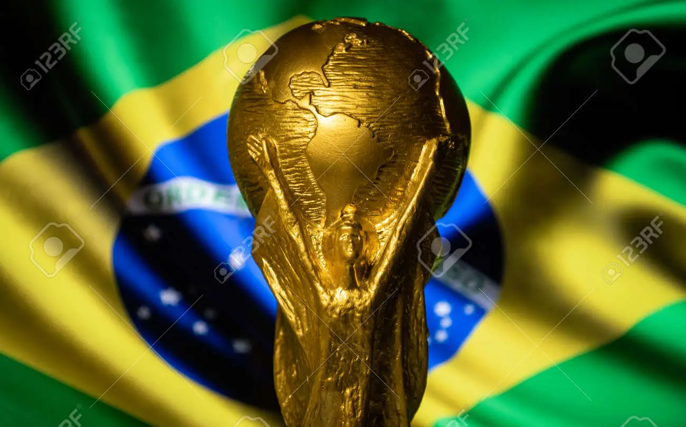
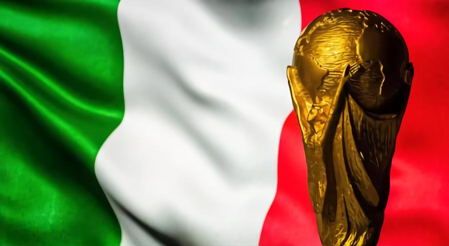
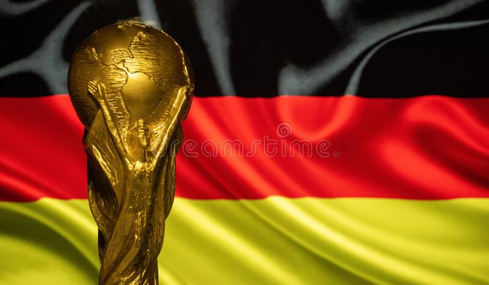
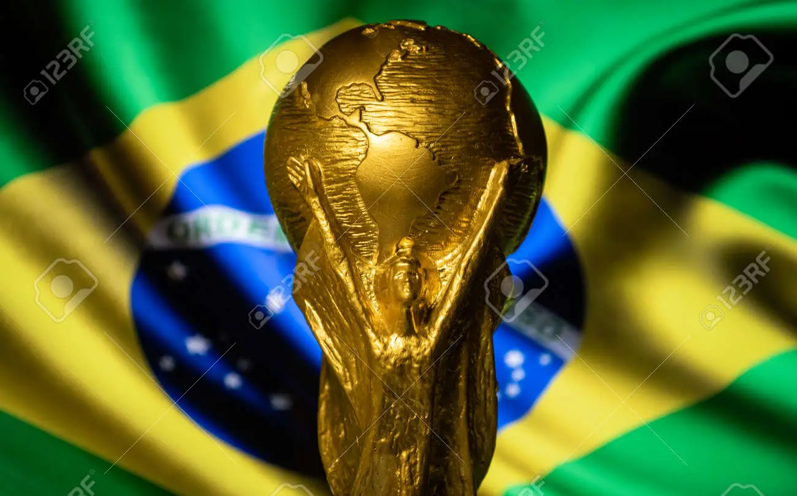
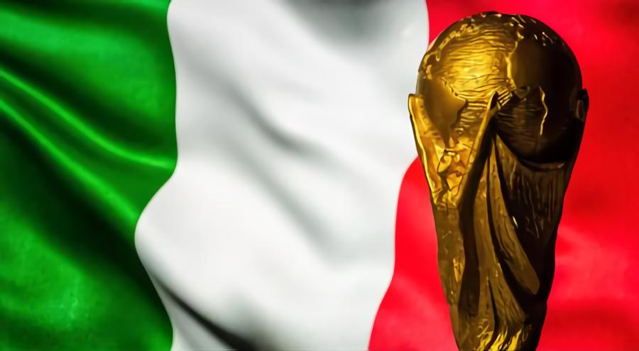

2022 FIFA WORLD CUP
The wait is over. The greatest footballing event on earth - The FIFA World Cup 2022 which is to be unveiled on 21 November with 32 teams eyeing for the coveted trophy. First ever world cup to be played in Arabian peninsula & that too in winter gonna make everyone on the cusp - which team will win the 22nd edition of this quadrennial tournament? Who will stand out as the golden player? All expectations, speculations, questions, & prayers will be answered on 17 December - the grand finale of the World cup
Mascot
The tournament's official mascot was unveiled on 1 April 2022, during the group stage draw and his name is La'eeb. The mascot of the most followed sporting event on the planet is an anthropomorphized Qatari turban that has eyes, eyebrows, a mouth and its own agal (the black cord used to fasten that garment to the head).
The design is inspired by the accessory frequently used by men from Qatar and other countries of the Arabian Peninsula.
The name La'eeb refers to soccer, as it means "skillful player" in Arabic, that is: a crack . On the official FIFA website it is explained that the character comes from the metaverse of pets, a parallel universe that cannot be described in words and that everyone can imagine as they want.
Match ball
Al Rihla has been revealed by adidas as the Official Match Ball for the FIFA World Cup Qatar 2022™. The 14th successive ball that adidas has created for the FIFA World Cup™ is designed to support peak game speeds, as it travels faster in flight than any ball in the tournament’s history.
This is a stunning, sustainable and high-quality Official Match Ball from adidas that will be enjoyed by stars performing at the top of their game on the world’s biggest stage in Qatar, as well as grassroots players everywhere,
said Jean-François Pathy, FIFA’s Director of Marketing.
Designed from the inside out using data and rigorous testing at adidas labs, in wind tunnels and on the pitch by football players themselves, Al Rihla provides the highest levels of accuracy and reliability on the field of play, partly due to its new panel shape and surface textures.
History of FIFA World cup
 





32 teams from around the world will descend on Qatar to take part in the 2022 FIFA World Cup. It's the 22nd edition of the world's premier sporting event, and plenty of football forces will vie for the 2022 title, including powerhouses Spain, Brazil, France, Germany and Argentina.
Want to know who will win the 2022 World Cup? We can't tell you that, but we can tell you who won each of the first 21 World Cups, dating back to the inaugural tournament in 1930. To get you set for Qatar 2022, here's a World Cup championship leaderboard and a rundown of every championship game in this illustrious event.
Brazil is the most successful national team in the history of the World Cup, having won five titles, earning second-place, third-place and fourth-place finishes twice each. Other than Brazil, Italy and Germany sit together winning this prestigious honour four times.
| Team | World Cup | Year |
|---|---|---|
| Brazil | 05 | 1958, 1962, 1970, 1994, 2002 |
| Germany | 04 | 1954, 1974, 1990, 2014 |
| Italy | 04 | 1934*, 1938, 1982, 2006 |
| Argentina | 02 | 1978, 1986 |
| France | 02 | 1998, 2018 |
| Uruguay | 02 | 1930, 1950 |
Overall Top Goal Scorer
1. Miroslav Klose
Country: Germany
Goals: 16
2. Ronaldo Nazario
Country: Brazil
Goals: 15
3. Gerd Muller
Country: Germany
Goals: 14
Superstars of the show
With the biggest show on earth is approaching, let's see which superstarts will be in the limelight...
 Lioner Messi
Lioner Messi